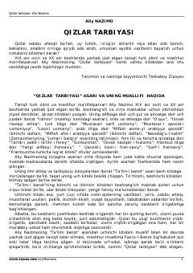

QTQizlar uchun odob-axloq, ro'zg'or tutish va oilaviy vazifalar haqida qimmatli qo'llanma.
XIX asr oxiri va XX asr boshlarida yashab ijod etgan turk olimi Aliy Nazimoning ushbu asari qizlar tarbiyasi, odob-axloq va ro'zg'or tutish sirlariga bag'ishlangan. Kitobda uy ishlarini reja bilan olib borish, tejamkorlik, poklik va ayollik vazifalari haqida qimmatli maslahatlar berilgan.